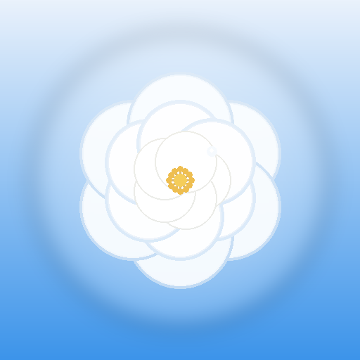

海盐白山茶
秋风与海浪 · 偷藏心动的专属小岛
轻触任意处进入小岛 ›
10:25
海盐与微风的专属小岛 · 晴朗微风
轻按 · 放进一张照片
海盐
白山茶
@
POSTMARK · HAVE A NICE DAY
秋风吹过白山茶
手写心语 ✎
拾光拍立得 · MEMORY
每一张合照，都是定格在时光里的偏爱
01 · 拾光
选图
02 · 合照
选图
03 · 独家
选图
深度羁绊 · EXPANDED
‹ 返回第一页
锡兰回声 · SLOW DOWN
放慢步调，把心事放进黑胶同心圆里旋转
慢调应用与留白 · QUIET APPS
星夜晚安 · DEEP NIGHT
微风停驻的夜，交换一个安稳香甜的梦
QUIET.ROOM // AMBIENT
STANDBY
浅海微风 · 入眠
闭上眼，听一场不会结束的潮汐
SIGNAL // 信号守护中心
DRIFT.LOG · 偏爱与同频中
STAR.JAR
+ 落一颗星
MOON.PHASE
星夜私藏 · SECRET SPACE
16:30
专属私密 iPhone
16:30
9月25日 星期四 · 晴朗微风
微信 · 特别关心
刚刚
特别关心 ★
“宝宝，今天有好好想我吗？”
↑ 轻触或上滑解锁 (已设为免密信任)
海盐与微风的专属小岛
22° 晴朗
微风拂面
空气微甜 · 宜收集浪漫与快乐
秘密备忘录
私密相册
搜索历史
恋爱账单
微聊私聊
山茶唱片
全局世界书
›
作用于所有角色的背景设定
0 个自定义条目
局部世界书
›
可单独挂载到特定角色的设定
0 个自定义条目
这里是专属世界书白纸，初始零预设。
你可以亲手为 TA 撰写独一无二的人设背景、心动细节与专属约定。
你可以亲手为 TA 撰写独一无二的人设背景、心动细节与专属约定。
设置
海盐与微风
Apple 账户、专属羁绊与系统云备份
智能连接与大模型
大模型 API 配置
DeepSeek
›
MiniMax 语音与音色
清朗原声
›
个性化美学与显示
色彩芳名与主题
海盐与月白
›
图标圆角与风格
经典圆角
›
桌面排版管理
单屏与分屏
›
数据资产与安全
导出与恢复备份
.json 离线档
›
出厂重置与抹掉
›
关于
关于海盐小手机
v2.1 原生版
›
所有验证码、购物物流与服务通知均在此实时同步。
支持模拟发送短信交互。
支持模拟发送短信交互。
模块预览
专属功能沉浸交互